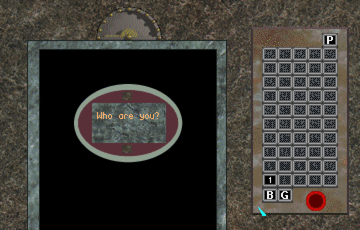

These people astonished Tom Bombadil by completing everything possible to do in the game! Get Lost! was designed to be played over and over again. Some of the secrets are very difficult to find, and some high scores are even harder to beat.
If you do managed to complete the game, tell me about it. Provide proof (like a screen shot or even a description of what happened) and we'll add your name to this list.
Warning: It ain't easy. Not even the testers actually accomplished this without cheating.
Get Lost! was a computer game that was produced by Tom Bombadil's Software Emporium & House of Curiosities late in 1996. The game was a product of one programmer, three artists, five level designers, and a lot of sweat and tears (no blood--it's a computer game, not football!).
While we were all very pleased with the game we made, we failed to market it well. Consequently, it was a market failure, despite being nominated for Shareware Game of the Year in 1997.
But that's long in the past. Here's the full version of the game, with all the typos and out-of-date information along with it. Play it, enjoy it, hate it, spread it around to anyone you like. I only ask that you keep everything intact in its original zip file.
Right click on this link and select "Save Link As..." to download Get Lost! Registered Version.
I highly recommend playing the game using the DOSBox program. It accurately emulates the unusual graphics modes and emulates the Sound Blaster and MT-32 sound cards quite well. I also recommend using DOSBox's processor speed boost (to at least 10000 cycles) to get the best performance. Too fast will mess up the sound cards (which is actually what would happen with real pc hardware!).
And I would LOVE to hear your comments. I worked my ass off for this game and *really* want to hear your stories, your triumphs, and your frustrations. There's a possibility that we might remake this damn thing for mobile devices.
But don't hold your breath.
